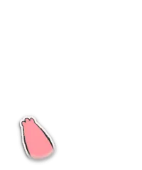
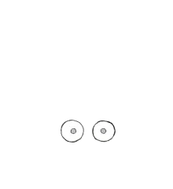
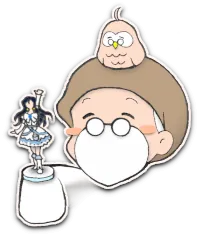
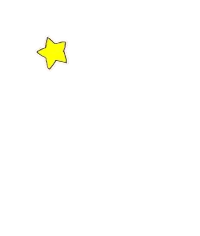
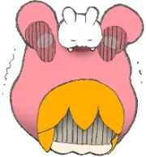
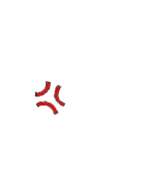
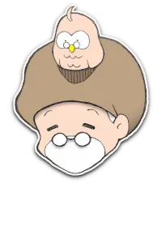
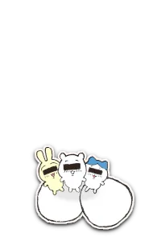

リスナーのあらゆゆ疑問や不思議にこたえゆ「宇宙よろず相談室」！
みんなのアイドル、ユニちゃんでしゅ！
みんなのアイドル、ユニちゃんでしゅ！


デュフフww
本日は行きつけの中古ショップでプレミア価格10倍の絶版フィギュアを保護できて大満足の Dr.YOU (ドクター・ユー) ですぢゃ♥️
本日は行きつけの中古ショップでプレミア価格10倍の絶版フィギュアを保護できて大満足の Dr.YOU (ドクター・ユー) ですぢゃ♥️




ぬわにっ!?
おま、今月の生活費は残りきびちーって口をすっぱくちてゆってたのにまた…耳をなくちたんか！
だいたいフィギュアなどと…精神的に成長ちた人間は「偶像崇拝」などちないのだから、ドクターなら年相応におちついて局の財政に貢献すゆがとーぜんなのでしゅ！
おま、今月の生活費は残りきびちーって口をすっぱくちてゆってたのにまた…耳をなくちたんか！
だいたいフィギュアなどと…精神的に成長ちた人間は「偶像崇拝」などちないのだから、ドクターなら年相応におちついて局の財政に貢献すゆがとーぜんなのでしゅ！


オウフwww
そんな難しい言葉、よくぞご存知でwww
そーゆーユニちゃそ社長には、年相応なプリ〇ュアの人形をあげませう。
ほれ、受け取るがよい。
かっこよいですぢゃのう♥️
そんな難しい言葉、よくぞご存知でwww
そーゆーユニちゃそ社長には、年相応なプリ〇ュアの人形をあげませう。
ほれ、受け取るがよい。
かっこよいですぢゃのう♥️


……………💢


…あれ、お気に召されない？
ちい〇わの方がよかったですかのう…。
それともこっち…いや、これの方が……ｳﾑﾑﾑﾑ
ちい〇わの方がよかったですかのう…。
それともこっち…いや、これの方が……ｳﾑﾑﾑﾑ